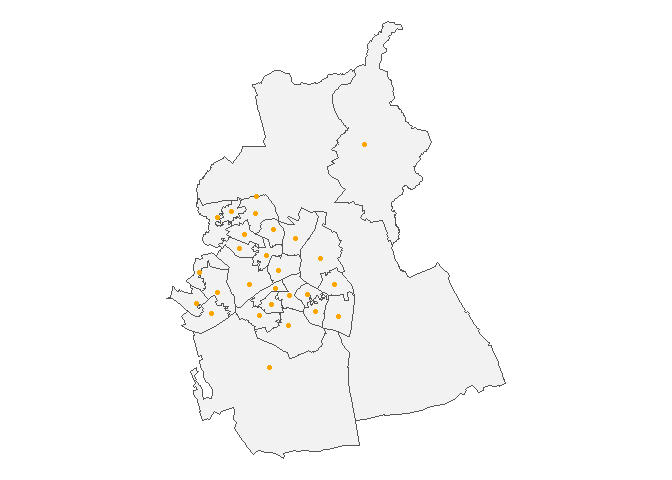
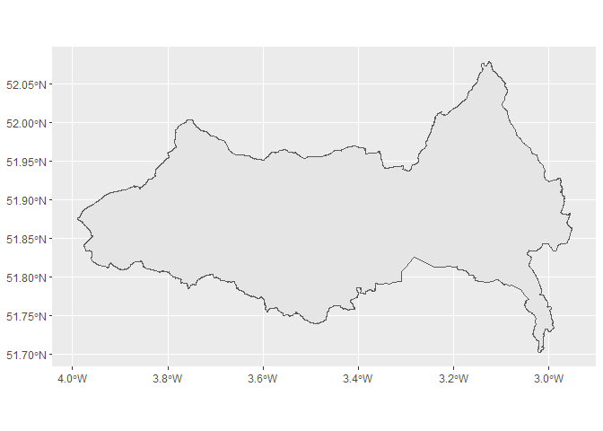

Retrieve area boundaries and data from the ONS Open Geography Portal
The main purpose of this package is to download area lookups and boundaries (in GeoJSON format) using the ONS Open Geography API, for all areas at a specified level within a specified area.
The main script will return a data frame with the sub-area geometry column, as an sf object ready to be visualised as a map.
Installation
You can install this package from the R console by entering
remotes::install_github("francisbarton/boundr")
if you have the remotes package installed.
Examples
Basic lookup of areas within a larger area, by name
Returns sfc tibble with latest available data
bounds("msoa", "lad", "Swansea")
#> Simple feature collection with 30 features and 7 fields
#> Geometry type: GEOMETRY
#> Dimension: XY
#> Bounding box: xmin: -4.333587 ymin: 51.53577 xmax: -3.842747 ymax: 51.77423
#> Geodetic CRS: WGS 84
#> First 10 features:
#> msoa21cd msoa21nm msoa21nmw msoa21hclnm
#> 1 W02000168 Swansea 001 Abertawe 001 Pontarddulais
#> 2 W02000169 Swansea 002 Abertawe 002 Clydach & Mawr
#> 3 W02000170 Swansea 003 Abertawe 003 Morriston North
#> 4 W02000171 Swansea 004 Abertawe 004 Llangyfelach & Tircoed
#> 5 W02000172 Swansea 005 Abertawe 005 Gorseinon
#> 6 W02000173 Swansea 006 Abertawe 006 Birchgrove
#> 7 W02000174 Swansea 007 Abertawe 007 Loughor
#> 8 W02000175 Swansea 008 Abertawe 008 Morriston South
#> 9 W02000176 Swansea 009 Abertawe 009 Mynydd-bach
#> 10 W02000177 Swansea 010 Abertawe 010 Llansamlet
#> msoa21hclnmw lad23cd lad23nm geometry
#> 1 Pontarddulais W06000011 Swansea MULTIPOLYGON (((-4.044836 5...
#> 2 Clydach a Mawr W06000011 Swansea POLYGON ((-3.976283 51.7646...
#> 3 Gogledd Treforys W06000011 Swansea POLYGON ((-3.913253 51.6935...
#> 4 Llangyfelach a Thircoed W06000011 Swansea POLYGON ((-4.011018 51.7080...
#> 5 Gorseinon W06000011 Swansea MULTIPOLYGON (((-4.062941 5...
#> 6 Gellifedw W06000011 Swansea POLYGON ((-3.875069 51.6875...
#> 7 Casllwchwr W06000011 Swansea MULTIPOLYGON (((-4.053356 5...
#> 8 De Treforys W06000011 Swansea POLYGON ((-3.929819 51.6721...
#> 9 Mynydd-bach W06000011 Swansea POLYGON ((-3.933911 51.6730...
#> 10 Llansamlet W06000011 Swansea POLYGON ((-3.898853 51.6750...Lookup areas with older dates
Trial and error may be required - or start by looking up what is available on the OpenGeography site.
bounds("msoa", "lad", "Shepway", lookup_year = 2011, within_year = 2015)
#> Simple feature collection with 14 features and 5 fields
#> Geometry type: POLYGON
#> Dimension: XY
#> Bounding box: xmin: 0.7770266 ymin: 50.91095 xmax: 1.221137 ymax: 51.205
#> Geodetic CRS: WGS 84
#> First 10 features:
#> msoa11cd msoa11nm msoa11hclnm lad15cd lad15nm
#> 1 E02005102 Shepway 001 Lyminge, Densole & Elham E07000112 Shepway
#> 2 E02005103 Shepway 002 Hawkinge E07000112 Shepway
#> 3 E02005104 Shepway 003 Folkestone North East E07000112 Shepway
#> 4 E02005105 Shepway 004 Folkestone Foord E07000112 Shepway
#> 5 E02005106 Shepway 005 Cheriton & Horn Street E07000112 Shepway
#> 6 E02005107 Shepway 006 Folkestone Morehall & Sandgate E07000112 Shepway
#> 7 E02005109 Shepway 008 Saltwood, Seabrook & Etchinghill E07000112 Shepway
#> 8 E02005110 Shepway 009 Lympne & Palmarsh E07000112 Shepway
#> 9 E02005111 Shepway 010 Hythe E07000112 Shepway
#> 10 E02005112 Shepway 011 Dymchurch, St Mary's Bay & Brookland E07000112 Shepway
#> geometry
#> 1 POLYGON ((1.089762 51.18973...
#> 2 POLYGON ((1.170835 51.13259...
#> 3 POLYGON ((1.184798 51.09985...
#> 4 POLYGON ((1.189394 51.08954...
#> 5 POLYGON ((1.135277 51.09801...
#> 6 POLYGON ((1.17032 51.0953, ...
#> 7 POLYGON ((1.111727 51.12941...
#> 8 POLYGON ((1.000461 51.1184,...
#> 9 POLYGON ((1.062613 51.07642...
#> 10 POLYGON ((0.9884286 51.0706...Alternative ways to achieve a goal
In this case, the first option is notably quicker than the second, because they use different tables to create the lookup table.
The second option fails to return boundaries unless the year option is included, as it creates a lookup table for rgn23 and ctry23 but boundaries are not available for rgn23 (only rgn22).
Different columns are returned by each command.
bounds("rgn", country_filter = "EN", resolution = "BUC")
#> Simple feature collection with 9 features and 8 fields
#> Geometry type: GEOMETRY
#> Dimension: XY
#> Bounding box: xmin: -6.419011 ymin: 49.86463 xmax: 1.768937 ymax: 55.81166
#> Geodetic CRS: WGS 84
#> rgn21cd rgn21nm bng_e bng_n long lat
#> 1 E12000007 London 517515 178392 -0.308660 51.49227
#> 2 E12000001 North East 417314 600356 -1.728880 55.29701
#> 3 E12000005 West Midlands 386294 295477 -2.203580 52.55697
#> 4 E12000003 Yorkshire and The Humber 446902 448736 -1.287140 53.93264
#> 5 E12000006 East of England 571078 263235 0.504207 52.24073
#> 6 E12000004 East Midlands 477659 322635 -0.849690 52.79572
#> 7 E12000002 North West 350014 506279 -2.772390 54.44944
#> 8 E12000008 South East 470062 172924 -0.993110 51.45097
#> 9 E12000009 South West 285013 102567 -3.633460 50.81119
#> shape_area shape_length geometry
#> 1 1594697003 256347.9 POLYGON ((-0.0968623 51.690...
#> 2 8675517225 804893.9 MULTIPOLYGON (((-1.540483 5...
#> 3 13003737567 953773.4 POLYGON ((-1.958916 53.2166...
#> 4 15560353265 982047.7 POLYGON ((-0.7829333 54.562...
#> 5 19584692923 1047595.8 MULTIPOLYGON (((1.604498 52...
#> 6 15810723352 1066495.4 POLYGON ((-0.2997642 53.614...
#> 7 14913854032 1066984.7 POLYGON ((-2.675591 55.1733...
#> 8 19399927121 1389475.4 MULTIPOLYGON (((-1.590507 5...
#> 9 24385283189 2378388.7 MULTIPOLYGON (((-6.398846 4...
bounds("region", "country", "England", lookup_year = 2022, resolution = "BUC")
#> Simple feature collection with 9 features and 4 fields
#> Geometry type: GEOMETRY
#> Dimension: XY
#> Bounding box: xmin: -6.360297 ymin: 49.88234 xmax: 1.763706 ymax: 55.81121
#> Geodetic CRS: WGS 84
#> rgn22cd rgn22nm ctry22cd ctry22nm
#> 1 E12000001 North East E92000001 England
#> 2 E12000002 North West E92000001 England
#> 3 E12000003 Yorkshire and The Humber E92000001 England
#> 4 E12000004 East Midlands E92000001 England
#> 5 E12000005 West Midlands E92000001 England
#> 6 E12000006 East of England E92000001 England
#> 7 E12000007 London E92000001 England
#> 8 E12000008 South East E92000001 England
#> 9 E12000009 South West E92000001 England
#> geometry
#> 1 MULTIPOLYGON (((-1.779088 5...
#> 2 MULTIPOLYGON (((-3.242936 5...
#> 3 MULTIPOLYGON (((-0.5207704 ...
#> 4 POLYGON ((-0.248476 53.5936...
#> 5 POLYGON ((-1.860732 53.1884...
#> 6 MULTIPOLYGON (((0.8374914 5...
#> 7 POLYGON ((-0.01191868 51.68...
#> 8 MULTIPOLYGON (((-1.55515 50...
#> 9 MULTIPOLYGON (((-6.349051 4...You can just request bare lookup tables - no spatial data attached
create_lookup_table("spc", "spr")
#> # A tibble: 73 × 4
#> spc22cd spc22nm spr22cd spr22nm
#> <chr> <chr> <chr> <chr>
#> 1 S16000083 Argyll and Bute S17000011 Highlands and Islands
#> 2 S16000086 Caithness, Sutherland and Ross S17000011 Highlands and Islands
#> 3 S16000110 Na h-Eileanan an Iar S17000011 Highlands and Islands
#> 4 S16000125 Inverness and Nairn S17000011 Highlands and Islands
#> 5 S16000132 Moray S17000011 Highlands and Islands
#> 6 S16000135 Orkney Islands S17000011 Highlands and Islands
#> 7 S16000142 Shetland Islands S17000011 Highlands and Islands
#> 8 S16000143 Skye, Lochaber and Badenoch S17000011 Highlands and Islands
#> 9 S16000080 Almond Valley S17000012 Lothian
#> 10 S16000104 Edinburgh Central S17000012 Lothian
#> # ℹ 63 more rowsA lookup table for Welsh local authorities to Senedd electoral regions
Sometimes boundr needs a little help finding what you are looking for. Supplying a year or country filter can help get the right table.
Using return_with = "full" includes all available columns, not just those referred to by the lookup and within arguments.
# This doesn't succeed:
# create_lookup_table("wd", "sener")
# supplying a year helps:
create_lookup_table("wd", "sener", lookup_year = 2022, return_width = "full")
#> # A tibble: 764 × 7
#> wd22cd wd22nm ua22cd ua22nm ua22nmw sener22cd sener22nm
#> <chr> <chr> <chr> <chr> <chr> <chr> <chr>
#> 1 W05001606 Mold West W06000005 Flints… Sir y … W10000001 North Wa…
#> 2 W05001605 Mold South W06000005 Flints… Sir y … W10000001 North Wa…
#> 3 W05001604 Mold East W06000005 Flints… Sir y … W10000001 North Wa…
#> 4 W05001603 Mold: Broncoed W06000005 Flints… Sir y … W10000001 North Wa…
#> 5 W05001602 Llanfynydd W06000005 Flints… Sir y … W10000001 North Wa…
#> 6 W05001601 Llanasa and Trelawnyd W06000005 Flints… Sir y … W10000001 North Wa…
#> 7 W05001600 Leeswood W06000005 Flints… Sir y … W10000001 North Wa…
#> 8 W05001599 Hope W06000005 Flints… Sir y … W10000001 North Wa…
#> 9 W05001598 Holywell West W06000005 Flints… Sir y … W10000001 North Wa…
#> 10 W05001597 Holywell East W06000005 Flints… Sir y … W10000001 North Wa…
#> # ℹ 754 more rows
# or a country filter:
create_lookup_table("wd", "sener", country_filter = "WA", return_width = "full") |>
dplyr::filter(sener22nm == "South Wales West")
#> # A tibble: 4 × 7
#> wd22cd wd22nm ua22cd ua22nm ua22nmw sener22cd sener22nm
#> <chr> <chr> <chr> <chr> <chr> <chr> <chr>
#> 1 W05001076 Brynna and Llanharan W06000016 Rhondda … Rhondd… W10000009 South Wa…
#> 2 W05001084 Glyn-coch W06000016 Rhondda … Rhondd… W10000009 South Wa…
#> 3 W05001088 Llanharry W06000016 Rhondda … Rhondd… W10000009 South Wa…
#> 4 W05001099 Pontyclun West W06000016 Rhondda … Rhondd… W10000009 South Wa…bounds now supports a shortcut which will return all bounds for a certain level, without having to specify a ‘within’ argument
Take care - you might download a lot of data!
bounds("spr")
#> Simple feature collection with 8 features and 8 fields
#> Geometry type: GEOMETRY
#> Dimension: XY
#> Bounding box: xmin: -8.649603 ymin: 54.63326 xmax: -0.7546071 ymax: 60.84569
#> Geodetic CRS: WGS 84
#> spr22cd spr22nm bng_e bng_n long lat shape_area
#> 1 S17000013 Mid Scotland and Fife 282520 731011 -3.90787 56.45655 9129823415
#> 2 S17000011 Highlands and Islands 244281 863126 -4.60963 57.63108 40126955263
#> 3 S17000020 Glasgow 264285 664694 -4.16969 55.85627 207721111
#> 4 S17000014 North East Scotland 352284 799608 -2.78889 57.08497 8957071558
#> 5 S17000019 Central Scotland 281356 669376 -3.89920 55.90282 940131195
#> 6 S17000018 West Scotland 239229 655570 -4.56416 55.76667 2288753142
#> 7 S17000015 South Scotland 300085 608202 -3.57755 55.35763 16115290761
#> 8 S17000012 Lothian 316704 666932 -3.33329 55.88829 858325682
#> shape_length geometry
#> 1 612257.00 POLYGON ((-3.894724 56.9227...
#> 2 8790966.43 MULTIPOLYGON (((-5.572362 5...
#> 3 87267.24 POLYGON ((-4.276113 55.9296...
#> 4 561602.62 POLYGON ((-2.847909 57.7061...
#> 5 235997.35 POLYGON ((-3.733132 56.0618...
#> 6 563692.94 MULTIPOLYGON (((-5.07178 55...
#> 7 947497.50 MULTIPOLYGON (((-5.106759 5...
#> 8 193925.75 POLYGON ((-3.425965 55.9938...The points() function returns area (population-weighted) centroids where available
(Check the OG website).
sb <- bounds("msoa", "lad", "Swindon")
sp <- points("msoa", "utla", "Swindon")
sb |>
ggplot2::ggplot() +
ggplot2::geom_sf(colour = "grey33", fill = "grey95") +
ggplot2::geom_sf(data = sp, colour = "orange") +
ggplot2::theme_void()
A ggplot2 example
Here we specify a ‘within_names’ argument alongside the ‘lookup’ argument. There’s no ‘within’ argument to be specified because there’s nothing to lookup. (There aren’t any lookup tables for National Parks - just the boundaries).
bounds("npark", within_names = "Bannau Brycheiniog", resolution = "BUC") |>
ggplot2::ggplot() +
ggplot2::geom_sf()
# https://github.com/francisbarton/mapirosa
library(mapirosa)
# https://dieghernan.github.io/tidyterra/reference/geom_spatraster_rgb.html
library(tidyterra)
bb <- bounds("npark", within_names = "Bannau Brycheiniog", resolution = "BUC", crs = 27700)
bb_basemap <- mapirosa::build_basemap(
bbox = sf::st_bbox(bb),
zoom = 3,
style = "outdoor",
squarify = TRUE,
crs = 27700)
ggplot2::ggplot(bb) +
tidyterra::geom_spatraster_rgb(
data = bb_basemap,
maxcell = 1e7,
max_col_value = 1) +
ggplot2::theme_void() +
ggplot2::geom_sf(colour = "coral", fill = "aquamarine", alpha = 0.3)
Package internal structure
The structure of the project looks a bit like this:
bounds() / points() [main UI functions]
^
|
|
<------- create_lookup_table() [available to the user]
| ^
| |
| <--------- return_query_data()
| |
| <--------- return_lookup_query_info()
| \
| \
<------- return_spatial_data() <----- opengeo_schema [data]
^ / ^
| / |
<-------- pull_geo_query_url() |
|
build_schema()When you call bounds() you specify a lower level area (eg ward) and a higher level area (eg local authority), and you specify either the name of the higher level area (or areas) or its code.
return_lookup_query_info() then finds the API query URL of a suitable lookup table - one that contains columns for both your lower and higher level areas. It does this by filtering opengeo_schema, which is a cached copy of the various datasets available from the Open Geography API Services list. This schema is available as internal data in the package - but may need updating.
create_lookup_table() then builds a lookup table (a tibble) based on all the areas you have said you are interested in. At the same time, return_spatial_data() will - if you have specified you want spatial boundaries data for your areas - retrieve the boundary data at your chosen resolution for your lower level areas. These will then be joined onto the lookup table and provided to you as an sfc tibble.
Contributing
Suggestions for improvements are welcome, preferably posted as an issue here on GitHub. Contributions as pull requests are also welcome.
Please note that boundr is released with a Contributor Code of Conduct. By contributing to this project, you agree to abide by its terms.
News
See NEWS.md for version notes.
boundr was previously jogger.
Licences
The code in this repo is MIT licensed.
The data that the code helps you retrieve is issued under a variety of licences, including:
Licensing statement as stipulated by the ONS:
- Source: Office for National Statistics licensed under the Open Government Licence v3.0
- Contains OS data © Crown copyright and database right 2023